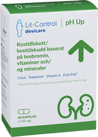
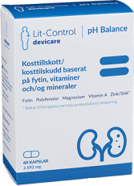
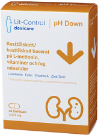

Fakta om njursten
Syrabas-balansen
Syra-basbalansen är en av kroppens viktigaste jämvikter och den mäts i pH. Olika organ i kroppen har olika pH-värden för att de funktioner de är avsedda för ska fungera optimalt.
Läs Mer
Vem är du?
Om du inte har njursten ska du vara nöjd. Risken att få njursten är
högre för män än för kvinnor. Ungefär 1 av 10 män upplever en njurstensepisod någon gång i
livet. Motsvarande siffra för kvinnor är 1 av 20. Medelåldern för en första akut njurstensattack
är 40 år.
Om du inte har njursten ska du vara nöjd. Risken att få njursten är
högre för män än för kvinnor. Ungefär 1 av 10 män upplever en njurstensepisod någon gång i
livet. Motsvarande siffra för kvinnor är 1 av 20. Medelåldern för en första akut njurstensattack
är 40 år.
Om du inte har njursten ska du vara nöjd. Risken att få njursten är
högre för män än för kvinnor. Ungefär 1 av 10 män upplever en njurstensepisod någon gång i
livet. Motsvarande siffra för kvinnor är 1 av 20. Medelåldern för en första akut njurstensattack
är 40 år.
Om du inte har njursten ska du vara nöjd. Risken att få njursten är
högre för män än för kvinnor. Ungefär 1 av 10 män upplever en njurstensepisod någon gång i
livet. Motsvarande siffra för kvinnor är 1 av 20. Medelåldern för en första akut njurstensattack
är 40 år.
Vad är Lit-Control?
Lit-Control är ett kosttillskott som bidrar till kroppens normala syra-basbalans.

Lit-Control pH Up
Citrat som hämmar kristallisering av urinsyra och kalcium
Teobromin som samverkar med citrat
Zink som bidrar till syrabasbalansen

Lit-Control Balance
Fytat som binder till molekyler med kalcium
Magnesium som samverkar med fytat
Zink som bidrar till syrabasbalansen

Lit-Control pH Down
L-metionin som motverkar kristallisering
Fytat som binder till molekyler med kalcium
Zink som bidrar till syrabasbalansen